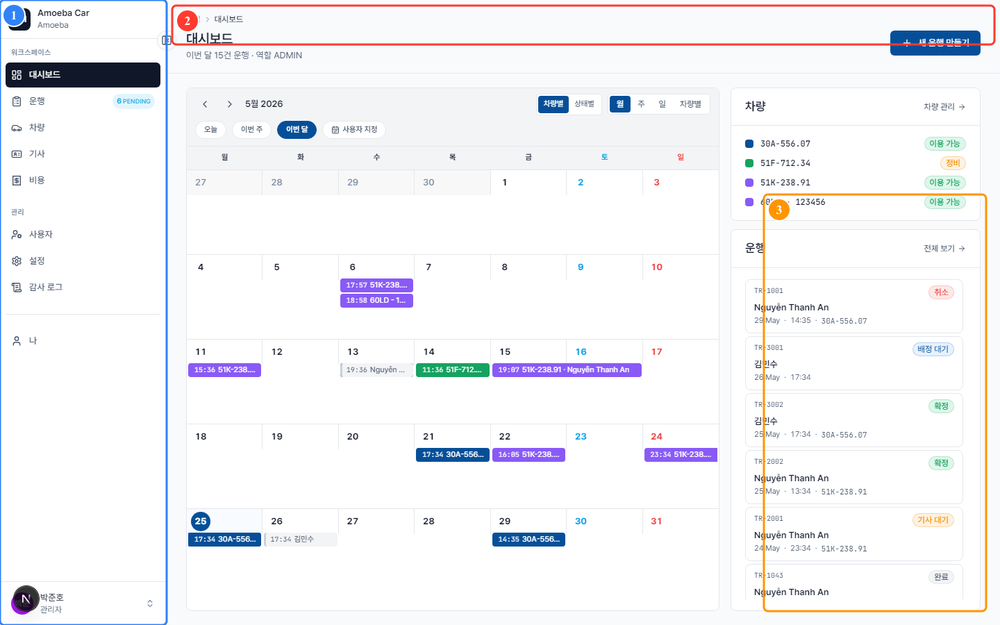

앱 화면 탐색
- 대상
- 모든 역할
- 읽는 시간
- 약 5분
- 난이도
- 기본 — 다른 기능을 사용하기 전에 읽으세요
앱은 두 가지 주요 레이아웃을 제공합니다: 관리자·매니저용 웹(데스크톱), 그리고 기사용 PWA 모바일. 두 레이아웃은 동일한 데이터를 공유하며 실시간 동기화됩니다.
1. 웹 레이아웃

1.1 왼쪽 사이드바
사이드바는 역할에 따라 메뉴가 표시됩니다. 주요 그룹:
- 워크스페이스 — 대시보드, 운행, 차량, 기사, 비용
- 관리 (관리자만) — 사용자, 설정, 감사 로그
- 개인 — 프로필 "나", 로그아웃
ℹ️
기사 역할일 때는 사이드바가 더 짧습니다 (오늘 · 내 운행 · 내 비용 · 나) — 관리 항목은 보이지 않습니다.
1.2 상단 바
페이지 상단에는 다음이 표시됩니다:
- 조직 · 현재 페이지 이름 — 브레드크럼 내비게이션
- 주요 액션 버튼 (우측) — 예: 대시보드의 "+ 새 운행 만들기"
1.3 본문 영역
모든 작업 내용이 여기에 표시됩니다: 데이터 테이블, 폼, 캘린더, 차트. 콘텐츠가 길면 세로로 스크롤됩니다.
2. 빠른 이동 — 역할이 홈 화면을 결정
앱 루트 URL에 접근하면 역할에 따라 자동 리다이렉트됩니다:
| 역할 | 자동 홈 | 이유 |
|---|---|---|
| 관리자 | /dashboard | 전사 현황을 봐야 하므로 |
| 매니저 / 디렉터 | /dashboard | 차량 예약과 차량팀 추적 |
| 기사 | /today | 오늘의 운행을 즉시 확인 |
3. 모바일 레이아웃 (기사)
모바일에서는 손가락 조작에 최적화된 레이아웃으로 자동 전환됩니다:
- 사이드바 없음 — 하단 탭 바로 대체 (오늘 · 운행 · 비용 · 나)
- 큰 버튼, 넓은 간격 — 차 안에서 조작하기 편하도록
- 홈 화면에 앱처럼 설치 가능 (PWA) — PWA 설치 참조
4. 유용한 단축키 (웹)
| 키 | 동작 |
|---|---|
Esc | 열려있는 모달 닫기 |
Tab | 폼 다음 입력란으로 이동 |
Enter | 폼 제출 (입력란 안에 있을 때) |
/ | 안내서 검색창 포커스 (이 문서 내) |